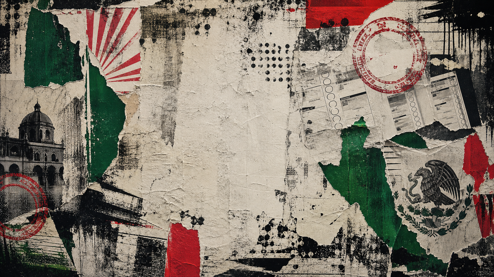
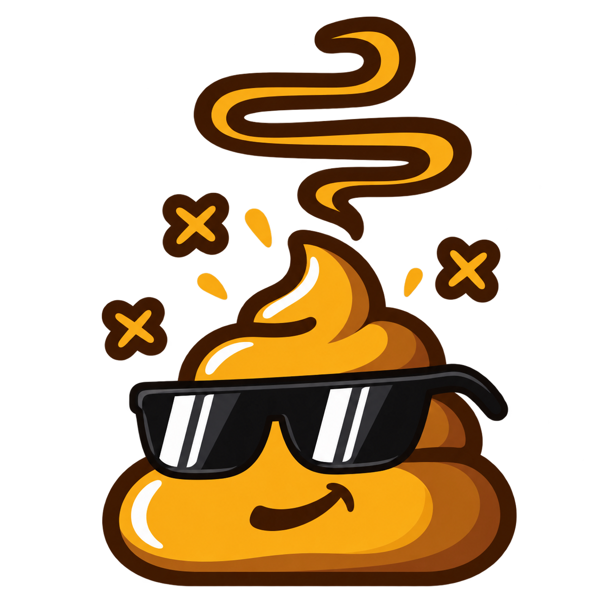

PDC en
Aguascalientes
- Voluntarios
- 128
- Actividades
- 9
- Puntos
- 4,820

Primer partido satírico en México
Somos una mierda, igual que el resto. La diferencia es que nosotros no venimos perfumados. Regístrate, toma una actividad concreta, sube evidencia y suma puntos para señalar lo que apesta cerca de ti.
Pero ya en serio
El Partido de la Caca nace como protesta contra el enriquecimiento inexplicable, el nepotismo, los contratos amañados, los aviadores, los favores entre cuates y la compra descarada de voluntades. No somos izquierda, derecha ni centro: somos el dedo señalando el olor.
El partido en tu estado
Elige tu estado para ver una muestra de voluntarios, actividades y puntos. Esta primera versión simula el portal para validar el flujo.
PDC en
Ranking local
Actividades concretas
Las actividades deben poder registrarse, revisarse y contar. Nada de puntos por aplaudir bonito.
Agenda
Centro histórico - 18 lugares
Municipios prioritarios - cupo abierto
Plaza pública - 40 voluntarios
Sistema de puntos
Los puntos no compran candidaturas, poder ni trato preferente. Solo registran participación verificable.
Evidencias

Si va a oler mal, que por lo menos sea honesto.